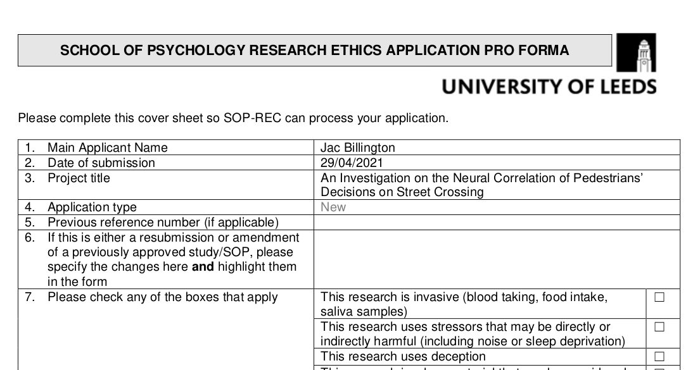
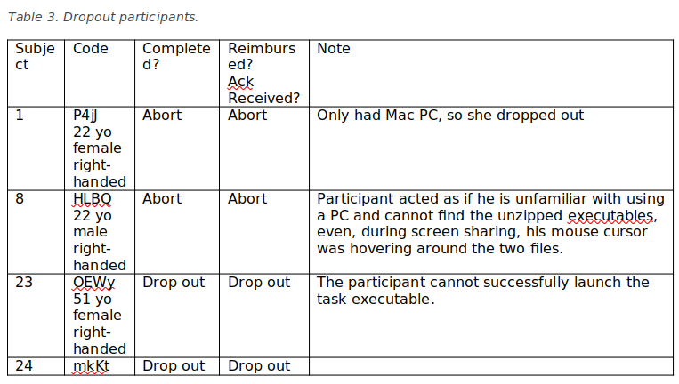
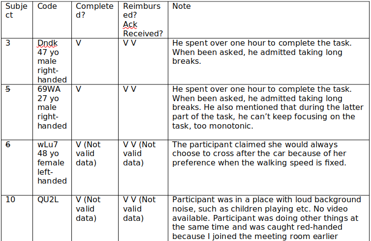
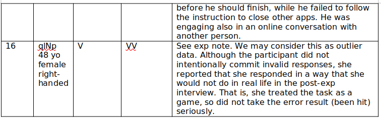
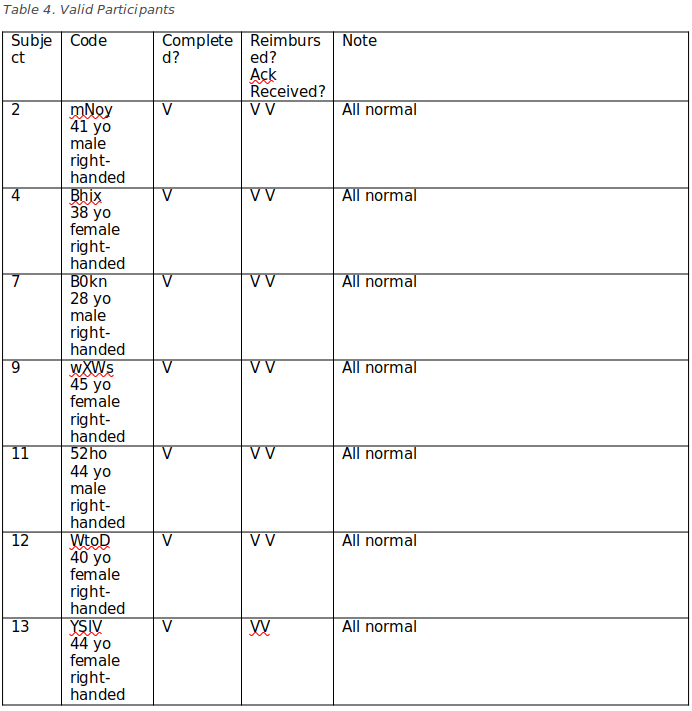
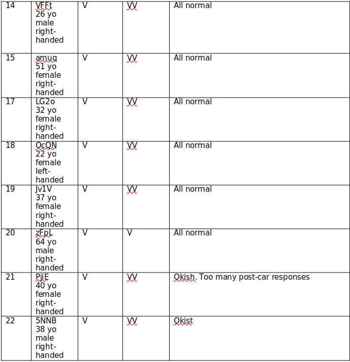
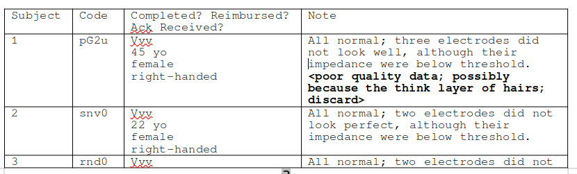
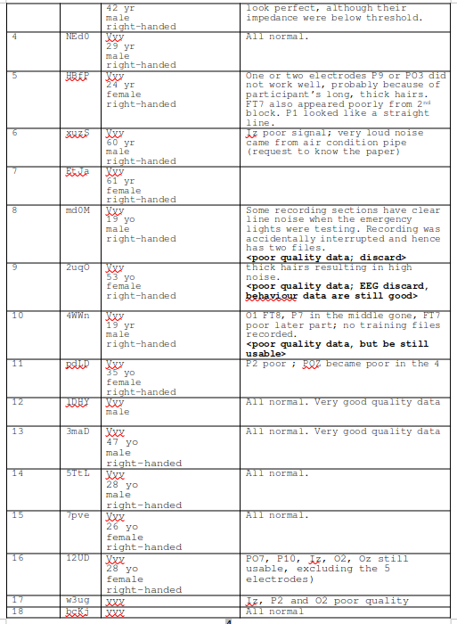
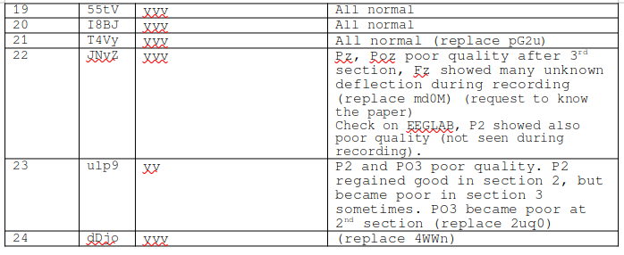

0. Experimental Protocol and Preprocessing
Yi-Shin Lin
2022-11-14
0_preprocessing.RmdEthics
We submitted our research plan for ethics review on 21-01-21 (dd-mm-yy) and received an approval on 24-01-21. To protect personal data, I smudged (private) email addresses in the document.
We submitted an amendment for this plan on 29-04-21, adding to collect EEG data and to change the meeting method from on-line to in-person laboratory visit. The EEG experiments were conducted between 08-06-21 to 03-09-21.
We recruited participants and ran EEG experiments, using the facilities in the School of Psychology, so the research plans were submitted by one of the co-authors affiliated with it.

I stored all raw data in a sub-folder, tests/inst/extdata
under the project folder, pedxing. The data in the first-level
data folder is a R binary, after collating all raw data
together, except EEG. Specifically, the former includes EEG data, which
have the size that is over the limit for an R package.
By organising a similar directory structure, one should be able to replicate our analysis steps. We make available our raw data at a repository hosted by zenodo. We are grateful to the OpenAIRE project which provides this service free of charge. Please cite our work, if you use our data, code and / or ideas. We provide them here also free, using GNU GPLv3 license.
Participants and Data
This following code chunk logged the main R packages I used during analysis. Sometimes, I call functions within a particular package by using the symbol, :: or :::, if they were not used frequently.
pkg <- c("ggplot2", "data.table")
sapply(pkg, require, character.only = TRUE)
wk <- ifelse(.Platform$OS.type == "windows",
shortPathName("F:/Documents/pedxing/"),
"/media/yslin/Tui/projects/pedxing/")
setwd(wk)
rm(list = ls())In the behaviour experiment, we recruited 24 participants, using MS Team. We hosted 24 on-line meetings during 25-Feb-21 to 20-Apr-21. Four participants dropped out before they finished the task. For instance, participant, HLBQ, dropped out because he did not know how to unzip the task file over 20 minutes.
Few participants did not fill in their age or handedness information in the questionnaire we distributed. We found out the missing data after starting data analyses, because of the protocol requiring the analysis must start after the recruitment. We did analyse two pilot participants as a review of the research plan, including the experimental procedure and the analysis plan. The NA’s in the following code reflected the missing data. mkKT did not show up at the appointment time.
sNme_exp <- data.frame(sq = 1:24,
s = c("P4jJ", "mNoy", "Dndk", "Bhix", "69WA", "wLu7",
"B0kn", "HLBQ", "wXWs", "QU2L","52ho", "wToD",
"YSlV", "VFFt", "amug", "qlNp", "LG2o", "OcQN",
"Jv1V", "zFpL", "PjiE", "5NNB", "OEWy", "mkKt"),
sex = c("female", "male", "male", "female", "male",
"female", "male", "male", "female", "male",
"male", "female", "female", "male", "female",
"female", "female", "female", "female", "male",
"female","male", "female", NA),
age = c(22, 41, 47, 38, 27, 48,
28, 22, 45, NA, 44, 40,
44, 26, 51, 48, 32, 22,
37, 64, 40, 38, 51, NA),
handedness = c('r', 'r', 'r', 'r', 'r', 'l',
'r', 'r', 'r', NA, 'r', 'r',
'r', 'r', 'r', 'r', 'r', 'l',
'r', 'r', 'r', 'r', 'r', NA))
dropout_exp <- c(1, 8, 23, 24)
discard_exp <- c(3, 5, 6, 10, 16)
valid_exp <- c(2, 4, 7, 9, 11, 12, 13, 14, 15, 17, 18, 19, 20, 21, 22)
sNme_exp[dropout_exp, ]
sNme_exp[discard_exp, ]
sNme_exp[valid_exp, ]
length(discard_exp) / (nrow(sNme_exp) - length(dropout_exp))
# 0.25Note we recruited participants in our first experiment when UK residents were under a strict lock-down order, so our procedure had to accommodate this. This contributes to the result that we have to exclude a good number of participants. A table below detailed the reasons that why we must exclude them.
On-line Experiments

At the end, we had to drop 4 participants who had not finished or even had not started the task, and discard 5 participants (5 in 20). This resulted in a discard rate of 25%. This rate is, although high, not unexpected considering the circumstance and using on-line meeting to recruit participants. This includes one participant who, when she was interviewed after her practice trials, insisted that she has decided to cross the road only after the car passed, a strategy that our instruction does not encourage. We excluded her for this reason, considering her not following the task instruction. The instruction encouraged participants to make pre-car responses when it is possible.
Note it would contradict the research aim if we recruited participants who decide what responses he / she is going to make, prior viewing the imperative stimulus. Importantly, we randomly presented the four TTA conditions and the timing of TTAs at each trial was moved slightly by adding a number drawn from \(Unif(-0.1, 0.1)\). The above two tables logged the detailed reasons to discard these participants. I logged the information immediately after the meetings.
The following tables are the analysed participants from the behavioural study.

EEG Experiments
In the EEG data set, the discard rate is 12.5%, slightly lower than the behavioural data set. This data set was acquired after the lock-down was lift. It was still at the time when people were generally wary of disease transmission. We followed a strict experimental protocol taking account of the circumstance. Specifically, we used a cleaning procedure pre- and post-experiment and gowned up PPE. We implemented this procedure as close to those did in NHS as we could possibly do. We also restricted the time running the experiment to minimise contact time, i.e., limiting ourselves the amount of time to install EEG electrodes.

Under this circumstance, we have to discard the three participants because we could not attain good quality of EEG signals under a set time limit. Although one might improve the efficiency of operating with full PPE, this must take a certain amount of practice.
sNme_eeg <- data.frame(sq = 1:24,
s = c('pG2u','snv0','rnd0','NEd0','HBfP','xuzS',
'EtJa','md0M','2uqO','4WWn','pdLD','lDHY',
'3maD','5TtL','7pve','12UD','w3ug','bcKj',
'55tV','I8BJ','T4Vy','JNvZ','ulp9','dDjo'),
sex = c("female", 'female', 'male', 'male', 'female','male',
'female', 'male', 'female', 'male', 'female','male',
'male', 'male', 'female', 'female', 'female','male',
'female', 'female', 'female', 'female', 'male', 'male'),
age = c(45, 22, 42, 29, 24, 60,
61, 19, 53, 19, 35, NA,
47, 28, 26, 28, 38, 19,
38, 21, 19, 62, 22, 41),
handedness = c('r', 'r', 'r', 'r', 'r', 'r',
'r', 'r', 'r', 'r', 'r', 'r',
'r', 'r', 'r', 'r', 'r', 'r',
'r', 'r', 'r', 'r', 'r', 'r'))
discard_eeg <- c(1, 8, 9)
valid_eeg <- sNme_eeg$sq[-discard_eeg]
3/ nrow(sNme_eeg)
## 0.125We have an almost equal male and female participants. The numbers of participant in the age groups, 20-30, 30-40, … and 60-70, distribute with the largest number in the first group, and gradually decrease. We do have participants in all age groups up to 64 years old. So we can state that our data represent not just the student/academic group. We are very grateful to our participants who are willing to take part during the difficult time, especially those in the upper age groups who might risk their life.
dtmp0 <- sNme_exp[valid_exp, ]
dtmp1 <- sNme_eeg[valid_eeg, ]
dtmp0$exp <- 'exp'
dtmp1$exp <- 'eeg'
d <- data.table(rbind(dtmp0, dtmp1))
dage <- as_tibble(d)
dage$age_gp <- cut(dage$age, breaks = c(20, 30, 40, 50, 60, 70), right = TRUE)
table(dage$age_gp)
# (20,30] (30,40] (40,50] (50,60] (60,70]
# 11 9 7 2 3
range(d$age, na.rm = TRUE)
# 19 64
table(d$sex)
# female male
# 20 16 We used a for loop to aggregate data together as a RData binary,
named ped.rda. In latter steps, we will repeatedly use this
binary file.
E <- c('exp', 'eeg')
path <- c("tests/inst/extdata/exp/valid/", "tests/inst/extdata/eeg/valid/")
ns0 <- length(list.files(path[1])); ns0
ns1 <- length(list.files(path[2])); ns1
fn <- "Commotions_Output_1.csv"
sNme <- d$s; sNme
## Participation sequence
## [1] "mNoy" "Bhix" "B0kn" "wXWs" "52ho" "WtoD" "YSIV" "VFFt" "amug" "LG2o"
## [11] "OcQN" "Jv1V" "zFpL" "PjiE" "5NNB"
##
## Alphanumeric order
## [1] "52ho" "5NNB" "amug" "B0kn" "Bhix" "Jv1V" "LG2o" "mNoy" "OcQN" "PjiE"
## [11] "VFFt" "wToD" "wXWs" "YSlV" "zFpL"
tmpNme <- c("Participant", "Trial", "TTA", "Jitter", "Side", "signalDelay",
"TrialStartTime", "CarAppearingTime", "CrossingkeyPressedTime",
"Hit", "OtherKeyPressedTime", "FirstKeyPressed", "AvgFPS")
d0 <- NULL
for(i in seq_len(2)) {
path <- paste0('tests/inst/extdata/', E[i], '/valid/')
sNme <- d[exp == E[i]]$s
ns <- length(sNme)
for(j in seq_len(ns)) {
dfile <- paste0(path, sNme[j],"/",fn); dfile
# This prints a figure to check over whether Unity results in correct
# delay time jitter.
output <- paste0(path, sNme[j], '/result_bk.ps')
tmp <- default_result(fn = fn, path = paste0(path, sNme[j]),
output = output, verbose = FALSE)
dtmp <- fread(dfile)
names(dtmp) <- tmpNme
dtmp$s <- d[s == sNme[j]]$sq
dtmp$age <- d[s == sNme[j]]$age
dtmp$sex <- d[s == sNme[j]]$sex
if(!d[s == sNme[j]]$s == sNme[j]) stop("Subject name mismatched")
dtmp$sNme <- sNme[j]
dtmp$exp <- E[i]
d0 <- rbind(d0, dtmp[, 2:18])
}
}
## d0
names(d0) <- c("Trial", "TTA", "Jitter", "Side", "Delay", "TrialStartTime",
"CarAppearingTime", "CrossingkeyPressedTime", "Hit", "OtherKeyPressedTime",
"FirstKeyPressed", "AvgFPS", "s", "age", "sex", "sNme", "E")
#### Rename columns ---------------------------
d0$BeforeCarPassed <- (d0$CrossingkeyPressedTime - d0$CarAppearingTim) < (d0$TTA + d0$Jitter)
d0$RT <- d0$CrossingkeyPressedTime - d0$CarAppearingTim
d0$TTANme <- factor(d0$TTA)
d0$Side <- factor(d0$Side)
# These two lines show a possible timing imprecision in Unity software
# d0$RT0 <- d0$CrossingkeyPressedTime - (d0$TrialStartTime + d0$signalDelay)
# d0$RT1 <- d0$CrossingkeyPressedTime - (d0$CarAppearingTim)
d0$R <- factor(ifelse(d0$Hit, "hit", "safe"))
d0$C <- as.logical(ifelse(d0$Hit, 0, 1))
# levels(d0$TTANme)
d0$G <- factor(ifelse(d0$BeforeCarPassed, "before", "after"))
dat <- d0[, c('Trial', 'Jitter',"BeforeCarPassed", "E", 'TTA', 'Side','R', 'C',
'G', 'TTANme', 'RT', 's')]
dat[E == "exp", .N, .(s)]
dat[E == "exp", .N, .(s, TTA)]
dat[E == "eeg", .N, .(s)]
dat[E == "eeg", .N, .(s, TTA)]
## Add D and DTTA columns for legacy code
dat$D <- 40
dat$Side <- factor(dat$Side)
dat$DTTA <- factor(paste0(dat$D, "-", dat$TTA),
levels = c('40-2.5', '40-3', '40-3.5', '40-4'))
dat[E == "exp", .N, .(TTA, s)]
dat[E == "eeg", .N, .(TTA, s)]The following is to format the data to enable RStan software to process.
valid_exp <- c(2, 4, 7, 9, 11, 12, 13, 14, 15, 17, 18, 19, 20, 21, 22)
valid_eeg <- c(2:7, 10:24)
dexp <- dat[E == "exp" & s %in% valid_exp]
deeg <- dat[E == "eeg" & s %in% valid_eeg]
dexp$s <- factor(dexp$s, levels = valid_exp)
deeg$s <- factor(deeg$s, levels = valid_eeg)
dexp$snew <- paste0(dexp$s, dexp$E)
deeg$snew <- paste0(deeg$s, deeg$E)
d <- rbind(dexp, deeg)
d$TTANme <- factor(d$TTANme, levels = c(2.5, 3, 3.5, 4))
d$sold <- d$s
d$s <- as.integer( factor(d$snew) )
setorder(d, s, TTA, Side, G, R)
d$TTAint <- as.integer( as.integer(factor(d$TTA)) - 1 )
d$side <- as.integer( as.integer(d$Side) - 1 )
d$TTAint <- as.integer( as.integer(factor(d$TTA)) - 1 )
d$side <- as.integer( as.integer(d$Side) - 1 )
## dat reduces columns
## d0 has all the columns
save(d0, dat, d, file = "data/ped.rda")
# tools::resaveRdaFiles("data/ped.rda", compress = "xz",
# compression_level = 9)
# see R documentation "ped" for description of the datasetLastly, we showed the two abnormal responses and investigated the reason behind why they appeared.
#### Two abnormal responses -------------------------------------------
## Road width: 4.2m
## Initial distance from Kerb: 0.5 m
## Car Length: 4.96 m
## Car Width: 1.9 m
## Car initial distance: 40 m
dtmp0 <- d0[d0$sNme == "Bhix" & d0$Trial == 28 & d0$TTA == 2.5,]
dtmp1 <- d0[d0$sNme == "VFFt" & d0$Trial == 17 & d0$TTA == 2.5 & d0$Delay == 3, ]
dtmp2 <- d0[d0$sNme == "Bhix" & d0$Trial == 27 & d0$TTA == 2.5,]
dtmp3 <- d0[d0$sNme == "Bhix" & d0$Trial == 24 & d0$TTA == 2.5,]
time2pass <- (4.2+.5) / 1.6
car2pass <- 4.96 / 40
dtmp0$CarAppearingTime + dtmp0$TTA + dtmp0$Jitter
dtmp0$CrossingkeyPressedTime
dtmp1$CarAppearingTime + dtmp1$TTA + dtmp1$Jitter
dtmp1$CrossingkeyPressedTime
dtmp2$CarAppearingTime + dtmp2$TTA + dtmp2$Jitter
dtmp2$CrossingkeyPressedTime
dtmp3$CarAppearingTime + dtmp3$TTA + dtmp3$Jitter
dtmp3$CrossingkeyPressedTime
## Conclusion: According to the Unity programmer, Unity
## represents the pedestrian and car by using cylinders. Therefore, imprecision
## representation might be the reason causing these two abnormal responses. This concludes the preprocessing step. Next I load
pedxing package, which will automatically bring in
ped.rda.